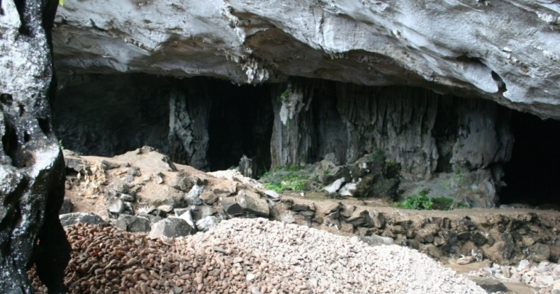
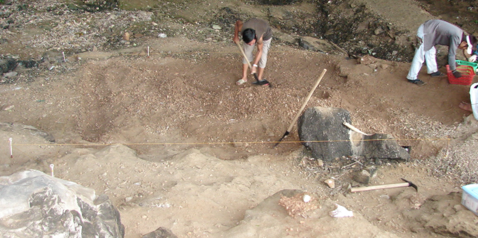
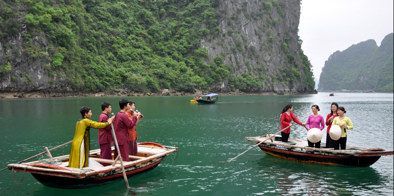

Được hình thành và phát triển từ lâu đời, Hạ Long cũng như bao vùng đất khác trên đất nước Việt Nam, có những nét đẹp văn hóa của người Hạ Long rất riêng, rất truyền thống. Mà cho tới ngày nay, những nét đẹp văn hóa đó vẫn còn được lưu giữ và phát triển. Đó là văn hóa Soi Nhụ, văn hóa Cái Bèo, văn hóa các làng chài Hạ Long.
Văn hóa những làng chài Hạ Long
Là nơi nổi tiếng với sông, nước và những dãy núi, hang động, Hạ Long cũng có những làng chài nhỏ của những ngư dân sinh sống. Những làng chài ấy, không chỉ lâu đời về sự hình thành, mà còn lâu đời cả về những nét đẹp trong văn hóa. Mặc cho dòng thời gian đang không ngừng trôi và xã hội đang ngày một phát triển. Phải kể đến như các làng chài nổi tiếng như: làng chài Cửa Vạn, làng chào Vung Viêng,…
Làng chài Cửa Vạn
Đây là một trong số những điểm du lịch Hạ Long hấp dẫn và được rất nhiều du khách biết tới. Chỉ cách Bãi Cháy khoảng 20 km, có thể tới đây bằng thuyền gỗ hoặc thuyền cao tốc. Nơi đây là một trung tâm văn hóa nổi của Hạ Long.

Nhắc tới làng chài Cửa Vạn, hẳn không còn xa lạ. Nhưng tới đây du khách chỉ được ngắm nhìn quan cảnh làng chài, và trải nghiệm cuộc sống của người dân nơi đây. Chứ rất ít khi được giới thiệu về những nét văn hóa của người Hạ Long.
Sống chủ yếu trên sông nước, người dân nơi đây mưu sinh bằng nghề đánh cá. Nên gắn liền với những lễ hội, những phong tục như thờ cúng Thủy Thần, tục thờ cá Ông,… Nếu bạn muốn được hòa mình và tham dự vào các nghi lễ văn hóa nơi đây, thì hãy tới vào mùa lễ hội.
Nếu như ở Bắc Ninh có hát quan họ, hát đối đáp thì ở Hạ Long cũng có hát giao duyên, hò biển,…Đó là nét đẹp văn hóa làng chài Hạ Long rất nổi tiếng. Nếu tới Hạ Long bắt gặp những người đang hát đối đáp thì bạn thật may mắn. Có thể đó là một đám cưới đang hát giao duyên giữa nhà trai với nhà gái. Những lời hát, nhịp điệu thắm thiết, đi vào lòng người làm du khách muốn nghe mãi không thôi.
Văn hóa Soi Nhụ
Nhắc tới văn hóa Soi Nhụ là nhắc tới một nền văn hóa truyền thống của Hạ Long, có từ hàng nghìn năm trước. Người dân nơi đây từ xa xưa sinh sống trong những hang đá vôi. Hình thành nên lối sống chủ yếu là thu lượm ốc, sò và hái hoa quả,…
Những di tích văn hóa còn tồn tại tới ngày nay tuy không nhiều, nhưng với những gì còn sót lại. Ta có thể thấy so với cùng thời kỳ, cuộc sống và nền văn hóa của con người nơi đây đã có những bước phát triển hơn, có sự xuất hiện của yếu tố biển. Mang tới sự đa dạng trong nền văn hóa. Mà cho tới ngày nay vẫn được bảo tồn và phát huy.
Văn hóa Cái Bèo
Kết nối giữa văn hóa Soi Nhụ và Văn hóa Hạ Long, Văn hóa Cái Bèo đã có nhiều đổi mới.
Con người ngày càng tiến xa ra biển khơi, để đánh bắt thủy hải sản, phục vụ nhu cầu sinh sống của mình, của gia đình.

Khám phá những nét văn hóa truyền thống của Cái Bèo, tưởng như bạn đang hòa mình vào cuộc sống sinh hoạt của con người nơi đây. Còn tồn tại cho tới ngày nay là những di tích, những đồ dùng sinh hoạt. Và mô hình cuộc sống hàng ngày được tái hiện lại. Nhằm giúp du khách hình dung về một cuộc sống tuy còn nhiều khó khăn nhưng ấm áp, gần gũi của người xưa.
Văn hóa Hạ Long
Văn hóa Hạ Long được chia thành hai giai đoạn, thể hiện bước phát triển rõ rệt trong văn hóa nơi đây.
Giai đoạn đầu tiên là khi nước biển xâm lấn, những người dân Cái Bèo phải di chuyển lên nơi cao hơn để sinh sống. Do đó có những sự thay đổi để thích nghi với cuộc sống mới. Để sinh sống, người dân canh tác, phát triển nông nghiệp song song với đánh bắt ngoài khơi. Do đó nền văn hóa Hạ Long ngày càng thêm phong phú hơn nữa.

Giai đoạn tiếp theo là khi nước biển xâm lấn cực đại rồi lại rút. Những người ngư dân không thể quên được cuộc sống gắn với biển khơi trước đây của họ. Nên đã di cư lại ra biển, và tiếp tục phát triển đời sống sinh hoạt của mình. Và con người ngoài canh tác, đánh bắt cá còn biết phát triển những nghề thủ công như làm gốm, sản xuất công cụ,…
Không chỉ bảo tồn những nét văn hóa truyền thống. Hạ Long còn là chứng tích lịch sử cho những cuộc chiến đấu oai hùng của dân tộc ta thời xưa. Là minh chứng cho cuộc chiến đấu oai hùng trên sông Bạch Đằng, và cũng là nơi gắn liền với di tích Rùa Vàng giúp vua Lê Lợi đánh thắng quân giặc.
Nguồn: halongcity.gov.vn